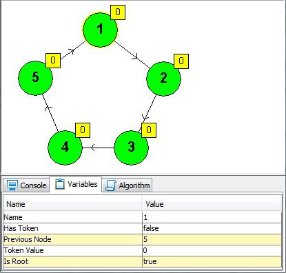
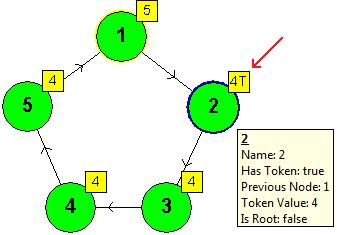

Prof. Dr. Edsger W. Dijkstra
topIn a sparsely connected system with distributed control the local rules of behaviour can guarantee within a bounded number of steps convergence of the system as a whole towards satisfying a global requirement.
Keywords: multiprocessing, networks, self-stabilization, synchronization, mutual exclusion, robustness, sharing, error recovery, distributed control, harmonious co-operation, self-repair.
top
Dijkstra's paper, which introduces the concept of self-stabilization,
presents an example in the context of a "token ring" — a network of
computers ordered in a circle, such that exactly one of them is supposed
to "hold a token" at any given time.
Not holding a token is a correct state for each computer in this network,
since the token can be held by another computer. However, if every computer
is in the state of "not holding a token" then the network altogether is
not in a correct state.
Similarly, if more than one computer "holds a token" then this is not a
correct state for the network, although it cannot be observed to be incorrect
by viewing any computer individually. Since every computer can "observe"
only the states of its two neighbors, it is hard for the computers to decide
whether the network altogether is in a correct state.
In order to build a network for simulating this algorithm, follow these steps:
An example for a ring - each node has its parent node defined (annotated by the arrows),
the selected node (1) is set as the root node.

The ring above after several steps had been executed. The token value in each node
is displayed in the annotation, the node which currently holds the token has also a "T"
in its annotation.
